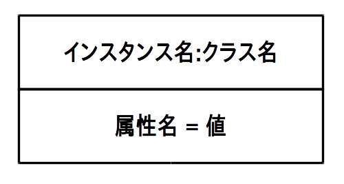
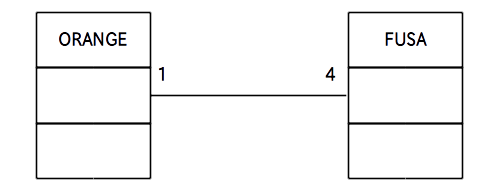
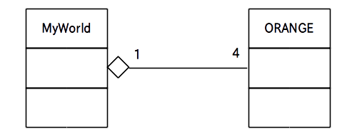
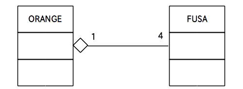

ここでは関連の一種である集約について学びます。
集約は「一方のクラスがもう一方のクラスを所有している」あるいは「一方のクラスはもう一方のクラスの一部である」などの主従関係を明確に示すために使われます。
この集約をクラス図で表す場合は図1の様に所有者側のクラスに中抜きのダイヤマークを付けます。
※ 中抜きダイヤマークばかりになるとクラス図が見辛くなるので主従関係が明らかな場合は中抜きダイヤマークを省略することも多いです
図1: 集約のクラス図

この関係を英語で書くと
A has a B ( A は B を所有している)
または
B is part of A ( B は A の一部である)
となりますので集約は別名「has-a 関係」とか「part-of 関係」と言います。
例えば、前のページで挙げた関連の例
図2: 関連のクラス図の例

の場合、
「ORANGE は MyWorld を所有している」または「MyWorld は ORANGE の一部である」
という解釈は(SFの世界でもなければ)変なので普通は
「MyWorld は ORANGE を所有している」または「ORANGE は MyWorld の一部である」
と解釈して良いでしょう。
従って以下の図3の様に集約を使って明確に MyWorld が ORANGE の所有者であることを示せます。
なお多重度より MyWorld は ORANGE を 4 つ所有しているという事も分かります。
図3: 集約のクラス図の例

さてこれで MyWorld と ORANGE の主従関係が明らかになりましたので、MyWorld のコードは次のソース1の様に書くことが出来ます。
集約の表現方法は色々ありますが、ソース1の様に所有者側のクラス(MyWorld)のフィールドとして所有される側のクラス(ORANGE)のインスタンスが定義されることが多いです。
MyWorld は ORANGE を 4 つ所有していますので、ORANGE クラスのフィールドを 4 つ定義しています。
public class MyWorld{
private ORANGE orange0;
private ORANGE orange1;
private ORANGE orange2;
private ORANGE orange3;
// getter
public ORANGE get_orange0(){ return this.orange0; }
public ORANGE get_orange1(){ return this.orange1; }
public ORANGE get_orange2(){ return this.orange2; }
public ORANGE get_orange3(){ return this.orange3; }
// コンストラクタ
public MyWorld()
{
this.orange0 = new ORANGE(0);
this.orange1 = new ORANGE(1);
this.orange2 = new ORANGE(2);
this.orange3 = new ORANGE(3);
}
}
なお private なフィールドを 4 つ追加したので、図3は次の図4の様に変わります。
図4: ソース 1 のクラス図

ちなみにMainクラスの例は次の通りです。
public class Main{
public static void main(String[] args){
MyWorld myworld = new MyWorld();
myworld.get_orange2().show();
}
}
実行結果：
みかん No.2 美味い